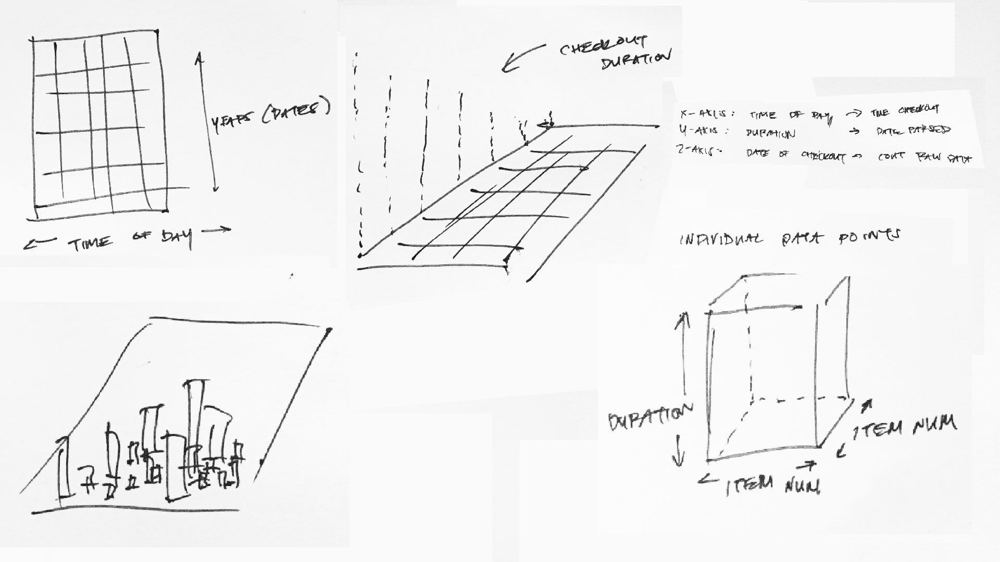
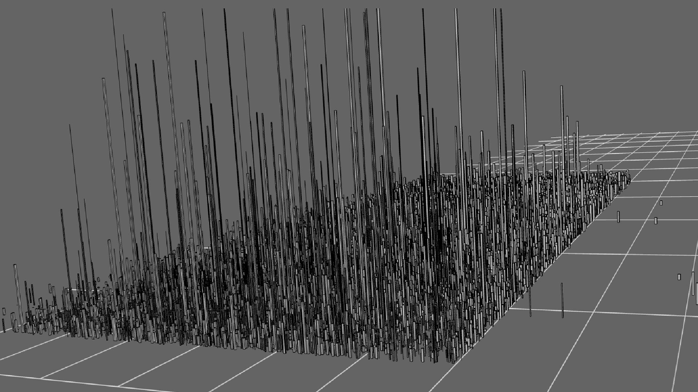
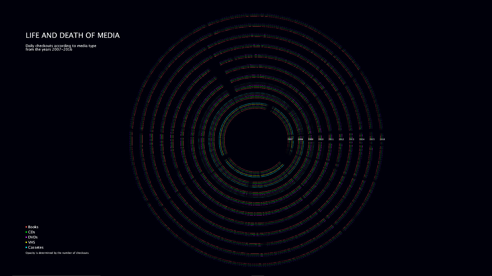
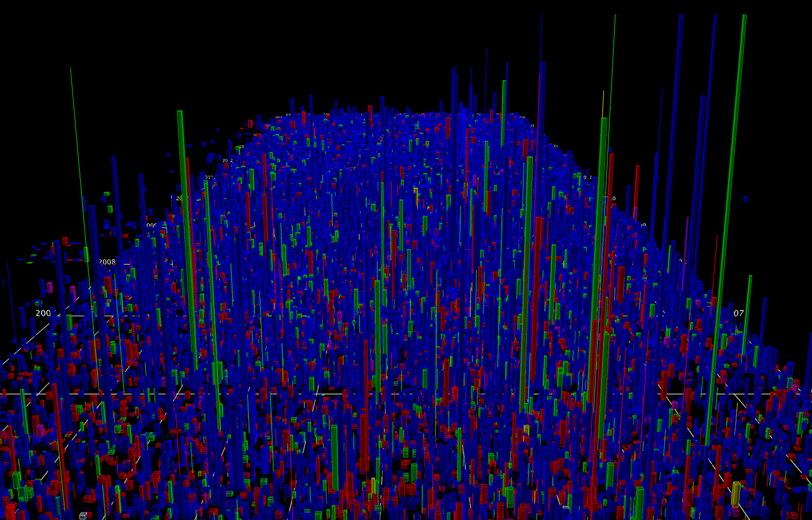
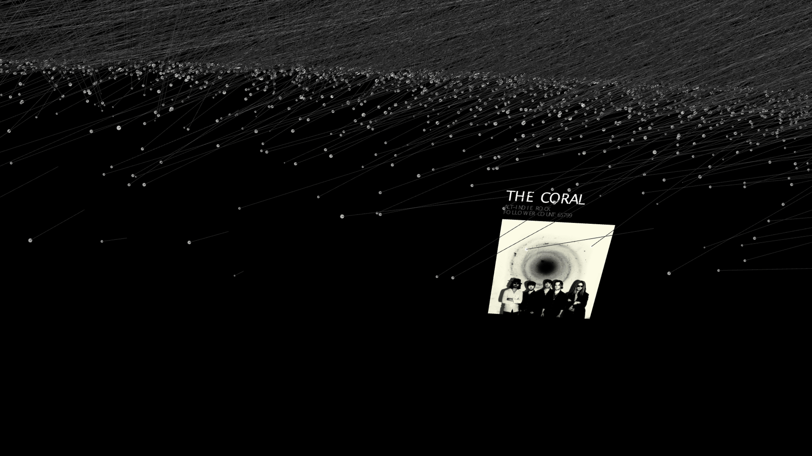

The first step is finding the data itself - identifying interesting trends, formulating interesting questions, and translating them to insightful queries. Following this I create rough sketches - not to constrain the form the data will take - but to create an environment that will best highlight the visual insights.
Prototyping through lower fidelity representations help iron out visibility and interaction issues while avoiding Processing’s inevitable performance limitations.


For Life and Death of Media, I used data from Seattle’s Public Library to visualize different media popularity through a life cycle inspired by the natural form of tree rings.
In Digital Skyline, I wanted to identify the changing vernacular of the digital world and to allow the data to create its own version of a sprawling metropolis.


Finally, in The Artist Network, I used data from Spotify to map out how different artists were related to each other in their galaxy.